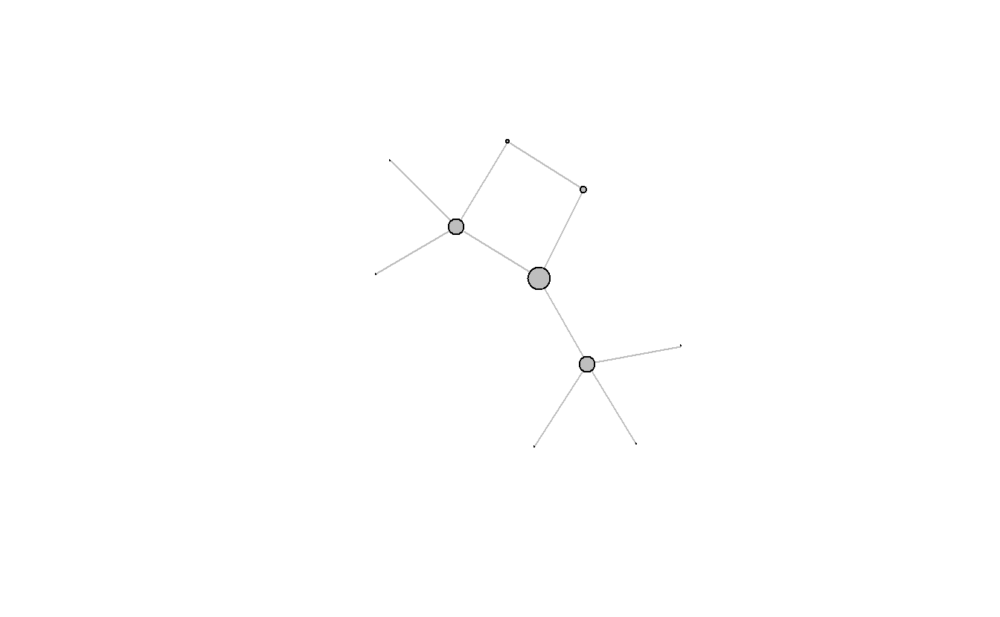
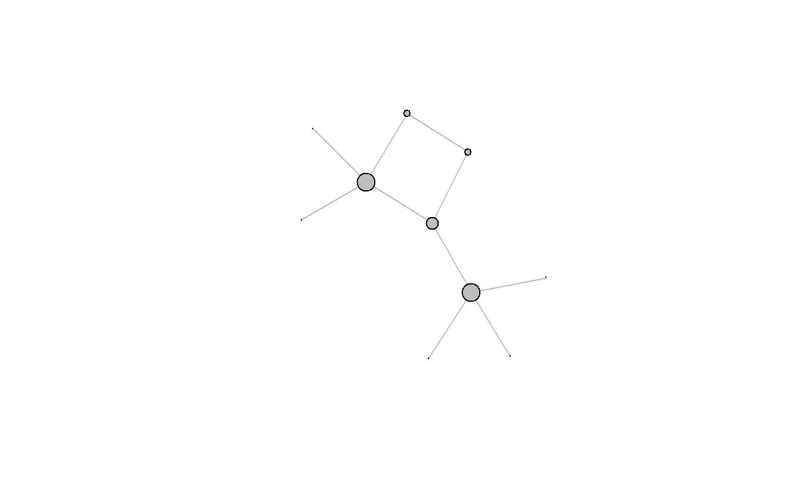
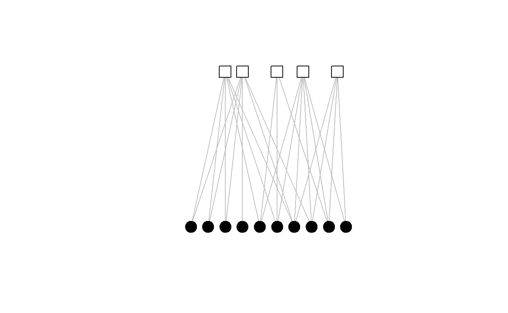
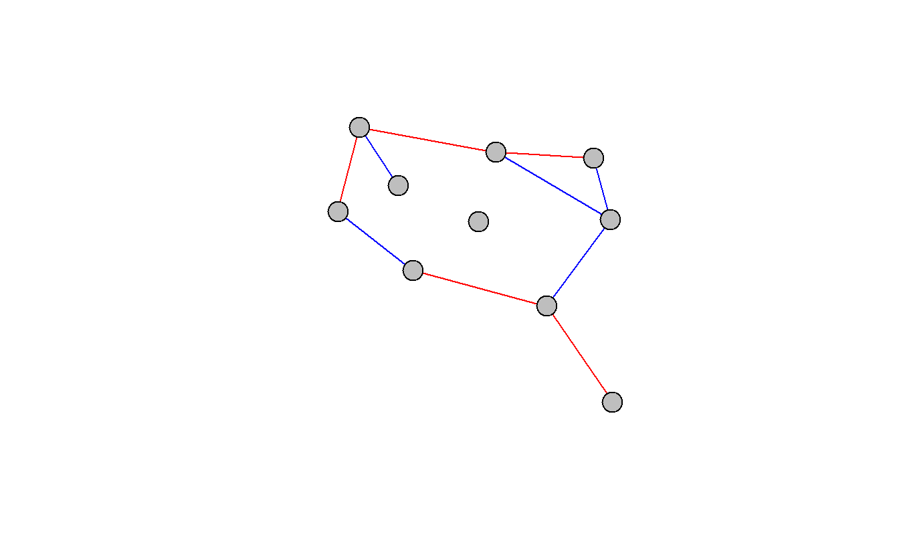

12 Glosario de Términos
Actores (Actors): Se refiere a todo tipo de entidatedes incluidas en la red, tales como: individuos, grupos, etc. Sinónimos incluyen nodos or vértices.

Figure 4.1: Actores
Actores Aislados (Isolates): Actores que not tienen conexión con otros actores. Ejemplo, actor en rojo:
Figure 4.2: Aislados
Centralidad (Centrality): Las medidas de centralidad dan una indicación aproximada del poder social de un actor en función de su posición dentro de la red. Un actor central puede ser alguien que tiene numerosos vínculos con otros actores (grado de centralidad), que está más cerca (en términos de distancia de ruta) a otros actores de la red (centralidad de cercanía), que se encuentra en el camino más corto entre dos actores en la red (centralidad de intermediación), ó que tiene vínculos con actores altamente centrales (centralidad de eigenvector).
Centralidad de cercanía (Closeness centrality): La centralidad de la cercanía captura qué tan cerca (en términos de la más corta distancia de ruta) cada actor es a todos los demás actores de una red. Ejemplo, red con nodos dimensionados por centralidad de cercanía:

Centralidad de eigenvector (Eigenvector centrality): La centralidad de eigenvector supone que los vínculos con los actores centrales son más importantes que los vínculos con los actores periféricos y, por lo tanto, pondera las conexiones sumadas de cada actor con los demás por sus puntajes de centralidad. Ejemplo, red con nodos dimensionados por centralidad de eigenvector:

Centralidad de intermediación (Betweenness centrality): La centralidad de intermediación mide la medida en que cada actor se encuentra en el camino más corto entre todos los demás actores de una red. Ejemplo, red con nodos dimensionados por centralidad de intermediación:

Centralidad de grado (Degree centrality): Formalmente, el grado de centralidad de un actor es igual al número de vínculos incidentes ó el número de lazos de un actor. Ejemplo, red con nodos dimensionados por centralidad de grado:

Centralización (Centralization): La centralización utiliza la variación en la centralidad todos los actores dentro de la red para medir el nivel de centralización. Más variación produce puntuaciones más altas de centralización de red; menos variación produce puntuaciones más bajos. En general, cuanto más grande es un índice de centralización, más probable es que un solo actor sea muy central.
Datos de atributos (Attribure data): Características (no-relacionales) de un actor en particulaers como identidad étnica, raza, años de educación, edad, nivel de salario, etc.

Datos de red modo-uno (One-mode network data): Consiste en un solo conjunto de actores. Por ejemplo:
- Relaciones de persona a persona como amistades, familiares, etc.
- Relaciones de organización a organización.
- Relaciones de grupo a grupo.

Datos de red modo-dos (Two-mode network data): Una red que consta de dos conjuntos de actores. Por ejemplo:
- Relaciones de persona a organización como afiliación.
- Relaciones de persona a grupo.
- Relaciones de grupo a nación.

Densidad (Density): Conceptualmente, la densidad se refiere al grado de interconexión de una red. Formalmente, es el número de vínculos en una red, expresado como una proporción del número máximo posible de vínculos. Está inversamente relacionado con el tamaño de la red (es decir, cuanto más grande es la red, menor es la densidad) porque el número de líneas posibles aumenta exponencialmente a medida que se agregan actores a la red, mientras que el número de lazos que cada actor puede mantener tiende a ser limitado.
Diámetro (Diameter): El diámetro de una red se refiere a el camino geodésico más largo de una red.
Distancia de ruta (longitud) (Path distance (length)): La distancia entre pares de actores en una red. El camino más corto entre un par de actores se conoce como la distancia geodésica.
Distancia promedio (Average distance): La distancia promedio se refiere a la longitud promedio de todos los caminos más cortos entre todos los actores conectados en una red y puede ser interpretada como un indicador de la velocidad en que la información (y otros recursos) se difunden a través de una red.
Estructura social (Social structure): La estructura social son los patrones duraderos de comportamiento y relaciones dentro de los sistemas sociales (por ejemplo, roles) o las instituciones y normas sociales que se han incorporado a los sistemas sociales de tal manera que dan forma al comportamiento de los actores. Dentro del ARSo, las estructuras sociales se ven en términos de patrones duraderos de lazos entre los actores (es decir, las redes sociales).
Grado promedio (Average degree): El grado promedio es igual al número promedio de vínculos entre todos los actores en una red. A veces se usa una medida alternativa a la densidad de la red porque, a diferencia de la densidad, no es sensible al tamaño de la red.
Tamaño de red (Network size): El tamaño de una red es igual al número de actores en la red.
Tipos de relación (Types of relationships): Valor categorico de vínculo entre un grupo de actores, como: amistad (en rojo), familia (en azul), etc.

Topología (Topography): La topología de la red se refiere a la estructura general de la red. Las medidas de uso común incluyen densidad, fragmentación, tamaño de red y centralización.
Vínculos (Ties): La relación entre dos nodos. Un vínculo puede ser direccionado (llamado arco, por ejemplo: <– | –> | <->) o no direccionado (llamado borde, por ejemplo: —).

Bastian, Mathieu, Sebastien Heymann, and Mathieu Jacomy. 2009. “Gephi: An Open Source Software for Exploring and Manipulating Networks.” http://www.aaai.org/ocs/index.php/ICWSM/09/paper/view/154.
Borgatti, Stephen P., Martin G. Everett, and Jeffrey C. Johnson. 2018. Analyzing Social Networks. Sage.
Chaudhary, Anshika, Himangi Mittal, and Anuja Arora. 2019. “Anomaly Detection Using Graph Neural Networks.” https://ieeexplore.ieee.org/abstract/document/7877466/citations#citations.
Cunningham, Daniel, Sean F. Everton, and Philip Murphy. 2016. Understanding Dark Networks: A Strategic Framework for the Use of Social Network Analysis. Rowman; Littlefield.
Davies, Allison, Burleigh B. Gardner, and Mary R. Gardner. 1941. Deep South: A Social-Anthropological Study of Caste and Class. University of Chicago Press.
Everton, Sean F. 2012. Disrupting Dark Networks. Cambridge.
Jacomy, Mathieu. 2011. “ForceAtlas2, the New Version of Our Home-Brew Layout.” Gephi. https://gephi.wordpress.com.
Knuth, D. E. 1993. “The Stanford Graphbase: A Platform for Combinatorial Computing.” Addison-Wesley.
Ognyavanova, Katherine. 2016. “Network Visualization with Gephi.” In Sunbelt 2016.